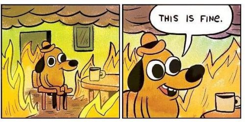

"Here is my secret. I don’t mind what happens. That is the essence of inner freedom. It is a timeless spiritual truth: release attachment to outcomes, deep inside yourself, you’ll feel good no matter what.”
--J. Krishnamurti
"Where there is ruin,
there is hope for a treasure."
--Rumi
The man has booked the free session I offer. He tells me of countless satsangs and silent retreats he’s been through, daily meditations, repeated trainings with well-known manifestors, LSD downed, frogs licked. And now here he is with me.
"Great, what are you hoping you’ll get here? What did you want when you booked this time?"
Oh nothing. Everything in life is great. He understands things, nothing bothers him, he gets there is no self, he gets that this is it, and it’s all love, and he's sure he has the choice to make his life better.
"Glad to hear. So what are we doing here, instead of you being off enjoying your good, no-problem life? What is lacking that you hope to get?"
Again, nothing.
Ah. Got it.
Another spiritual seeker bouncing from method to podcast to teacher to online forum- looking looking looking-
While pretending to be more together, more calm, more evolved, more in control than he is. Unable to admit he hasn’t found what he’s looking for, and that all those life-consuming, money-consuming methods have not done the job.
Oh dear. Now the man is angry. Probably because I am saying all this out loud.
The thing is, let’s face it, we all want something- and usually lots of somethings. We all do mind what happens. Even Krishnamurti, despite that famous quote above, minded very much what happened. Just like everyone else.
Because no alive human escapes personhood. And being a person hurts and feels inherently wrong.
Why? Well, because persons are images, illusions. We know it, we feel it. Which is partly why it's common for people to say things like, I’m not good enough, or Something is missing, or No matter what I do, I feel I should be doing something else, or There’s something wrong with me.
Humans sense the vast connectedness, we feel apart from it, and we want to, we yearn to, rejoin what we are.
Though of course the self will never be big enough for that. We feel not enough because we’re not enough. Because images can never be enough.
There’s no way illusion can feel satisfying.
Meanwhile, trying to look like we’re calm and wise, or trying to match some spiritual myth of what life should be- well, that’s a good way to increase - not decrease- a sense of not good enough and fraud.
And playacting that we’re doing better than we are, presenting a together image, doesn't make us actually better or more together.
That doesn't get us what we want; it just causes us to miss our actual experience, in favor of some fantasy.
And isn't it funny that we think playacting that we're doing great makes us look good? When actually it reveals how terrified we are to not be a polished perfect image.
Whew. No wonder seeking hasn’t worked out.
Besides, even if we could pull off matching ourselves to some mythological standard of enlightened life,
or even if we could somehow achieve not minding what happens,
are we so sure we even want that?
I mean, how ferociously dull would life be if it contained only calm and peace, only joy and love? How long would it take till we wanted to feel more, to have surprise, to get riled up and enjoy some hot intensity?
Aiming for not minding what happens could easily turn into, Be careful what you wish for.
Thankfully existence, in all its infinite variety, is far more interesting, doing its own thing, than any crazy human fantasy wants.
And thankfully, the way things are is hugely, vastly, incomprehensibly better, as is,
than the tedious monotony we can only imagine would be preferable.
So if we really want to not-mind something, perhaps we could play with not minding being imperfect, not minding being not enough. We could play with not minding craving, not minding missing out, not minding being a fraud.
Then if there’s anything left over, we could play with not minding that we do indeed mind what happens.
That’s a not-minding WHAT IS, rather than what isn’t.
Which is a helluva lot easier than trying to create perfection out of mirage.
Especially when WHAT IS is already an astonishing miracle.
And who,
or what,
can mind that?
Click here to watch Judy on Buddha at the Gas Pump
Click to watch Judy and Walter have fun chatting about about
nonduality, the self, consciousness, awareness, free will
and other light and breezy stuff
Judy And Robert Saltzman talk nonduality
and again: https://www.youtube.com/watch?v=7fv_vsvaejs
and again: https://www.youtube.com/watch?v=3DAn8Rqg3I0
"You will never be satisfied until you find out that you are what you are seeking. If you want knowledge as an individual, you will not get it here."
--Nisargadatta
"You can't wake a person who is pretending to be asleep"
--Navajo Proverb
"You don’t wake up by perfecting your dream character."
-- Jed McKenna
